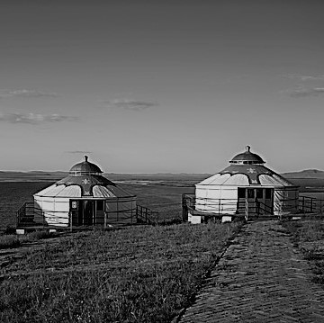
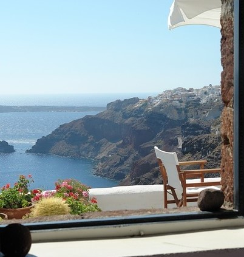
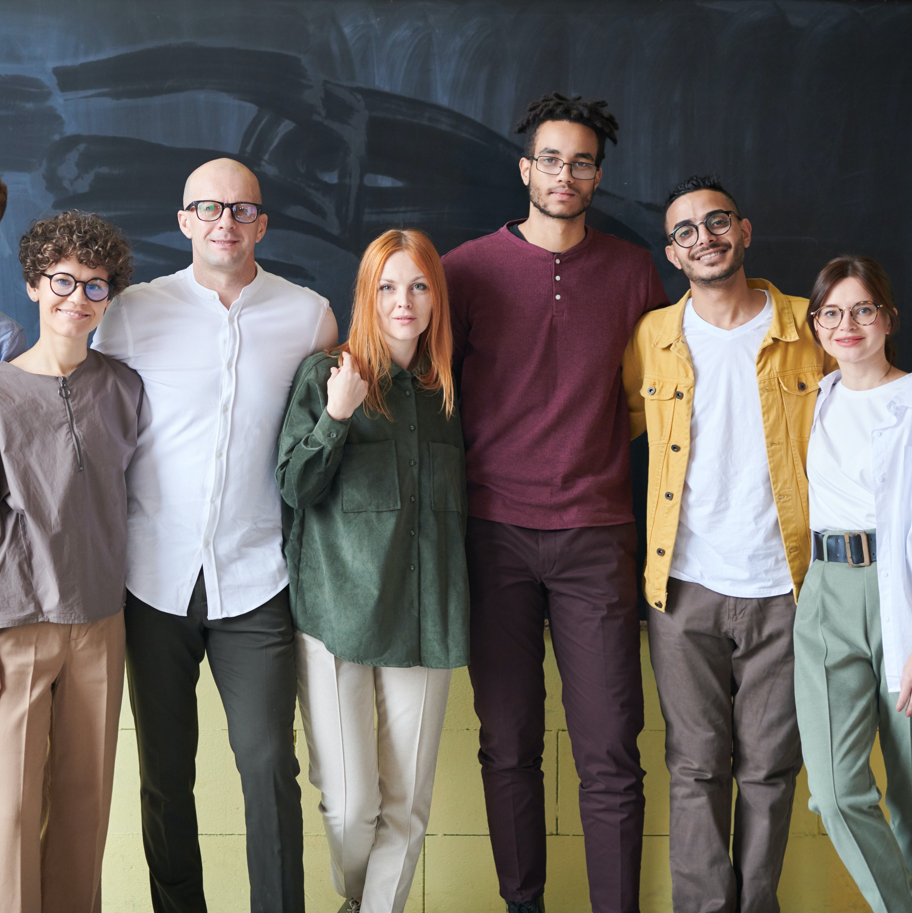

About Trail
Our History
Pacific Trails Resort has welcomed guests in Zephyr for over 20 years. Entreprenuers John and Mary Williamson were inspired to open a yurt resort after traveling through Central Asia. In 1975, Pacific Trails Resort opened with only 10 yurts. Today, you can find over 80 luxury yurts with a beautiful ocean view.
What Makes Us Unique?
Pacific Trails has been rated the number one adventure destination in Northern California by Travel + Leisure Magazine. We offer a unique experience by combining nature, adventure, and luxury. Whether it is a company retreat or a romantic get away, our packages can be customized to fit your needs.
Our Team
Our team is committed to providing the best service to guests. Each of our team members have been professionally trained and have stayed in a yurt to understand the high standards we hold here at Pacific Trails Resort. We support leadership, teamwork, and integrity.